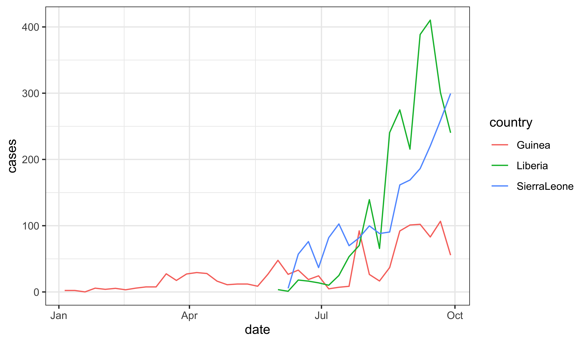
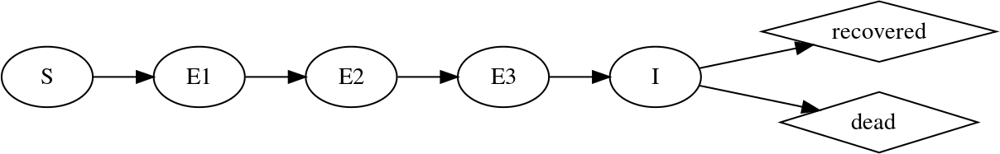

dat |>ggplot(aes(x=date,y=cases,group=country,color=country))+geom_line()

An SEIR model with gamma-distributed latent and infectious periods
Many of the early modeling efforts used variants on the simple SEIR model. Here, we’ll focus on a variant that attempts a more careful description of the duration of the latent period. Specifically, this model assumes that the amount of time an infection remains latent is \[\mathrm{LP} \sim \mathrm{Gamma}\left(m,\frac{1}{m\,\alpha}\right),\] where \(m\) is an integer. This means that the latent period has expectation \(1/\alpha\) and variance \(1/(m\,\alpha)\). In this document, we’ll fix \(m=3\).
We implement Gamma distributions using the so-called linear chain trick.

Model flow diagram.
Process model simulator
rSim <-Csnippet(" double lambda, beta; double *E = &E1; beta = R0 * gamma; // Transmission rate lambda = beta * I / N; // Force of infection int i; // Transitions // From class S double transS = rbinom(S, 1.0 - exp(- lambda * dt)); // No of infections // From class E double transE[nstageE]; // No of transitions between classes E for(i = 0; i < nstageE; i++){ transE[i] = rbinom(E[i], 1.0 - exp(-nstageE * alpha * dt)); } // From class I double transI = rbinom(I, 1.0 - exp(-gamma * dt)); // No of transitions I->R // Balance the equations S -= transS; E[0] += transS - transE[0]; for(i=1; i < nstageE; i++) { E[i] += transE[i-1] - transE[i]; } I += transE[nstageE-1] - transI; R += transI; N_EI += transE[nstageE-1]; // No of transitions from E to I N_IR += transI; // No of transitions from I to R")rInit <-Csnippet(" double m = N/(S_0+E_0+I_0+R_0); double *E = &E1; int j; S = nearbyint(m*S_0); for (j = 0; j < nstageE; j++) E[j] = nearbyint(m*E_0/nstageE); I = nearbyint(m*I_0); R = nearbyint(m*R_0); N_EI = 0; N_IR = 0;")
Deterministic skeleton
The deterministic skeleton is a vectorfield (i.e., a system of ordinary differential equations). The following C snippet computes the components of this vectorfield as functions of the state variables and parameters.
skel <-Csnippet(" double lambda, beta; const double *E = &E1; double *DE = &DE1; beta = R0 * gamma; // Transmission rate lambda = beta * I / N; // Force of infection int i; // Balance the equations DS = - lambda * S; DE[0] = lambda * S - nstageE * alpha * E[0]; for (i=1; i < nstageE; i++) DE[i] = nstageE * alpha * (E[i-1]-E[i]); DI = nstageE * alpha * E[nstageE-1] - gamma * I; DR = gamma * I; DN_EI = nstageE * alpha * E[nstageE-1]; DN_IR = gamma * I;")
Measurement model: overdispersed count data
\(C_t | H_t\) is negative binomial with \(\mathbb{E}\left[{C_t|H_t}\right] = \rho\,H_t\) and \(\mathrm{Var}\left[{C_t|H_t}\right] = \rho\,H_t\,(1+k\,\rho\,H_t)\).
dObs <-Csnippet(" double f; if (k > 0.0) f = dnbinom_mu(nearbyint(cases),1.0/k,rho*N_EI,1); else f = dpois(nearbyint(cases),rho*N_EI,1); lik = (give_log) ? f : exp(f);")rObs <-Csnippet(" if (k > 0) { cases = rnbinom_mu(1.0/k,rho*N_EI); } else { cases = rpois(rho*N_EI); }")
Pomp construction
The following function constructs a pomp object to hold the data for any one of the countries. It demonstrates one level of abstraction above the basic pomp constructor.
ebolaModel <-function (country=c("Guinea", "SierraLeone", "Liberia"),timestep =0.1, nstageE =3) { ctry <-match.arg(country) pop <-unname(populations[ctry]) nstageE <-as.integer(nstageE) globs <-paste0("static int nstageE = ",nstageE,";") dat |>filter(country==ctry) |>select(-country) -> dat## Create the pomp object dat |>select(week,cases) |>pomp(times="week",t0=min(dat$week)-1,globals=globs,accumvars=c("N_EI","N_IR"),statenames=c("S",sprintf("E%1d",seq_len(nstageE)),"I","R","N_EI","N_IR"),paramnames=c("N","R0","alpha","gamma","rho","k","S_0","E_0","I_0","R_0"),dmeasure=dObs, rmeasure=rObs,rprocess=discrete_time(step.fun=rSim, delta.t=timestep),skeleton=vectorfield(skel),partrans=parameter_trans(log=c("R0","k"),logit="rho",barycentric=c("S_0","E_0","I_0","R_0")),rinit=rInit ) -> po}ebolaModel("Guinea") -> ginebolaModel("SierraLeone") -> sleebolaModel("Liberia") -> lbr
References
King AA, Domenech de Cellès M, Magpantay FMG, Rohani P (2015). “Avoidable Errors in the Modelling of Outbreaks of Emerging Pathogens, with Special Reference to Ebola.”Proc R Soc Lond B, 282(1806), 20150347. https://doi.org/10.1098/rspb.2015.0347.